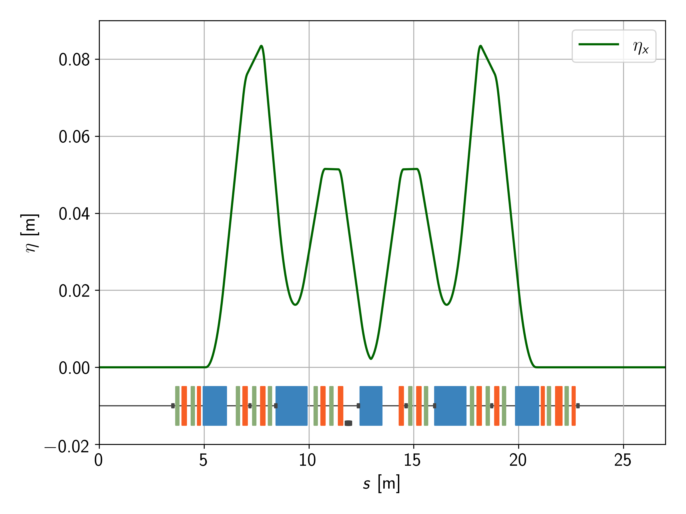
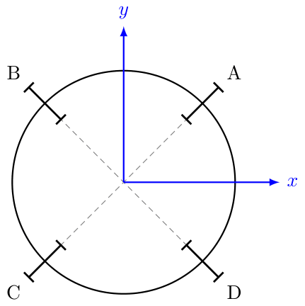
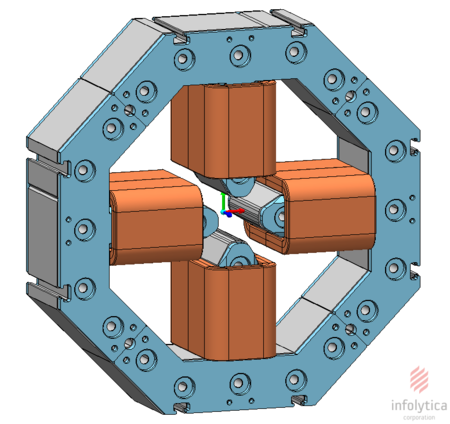

Alternative Beam-Based Alignment techniques for SIRIUS
Qualification Exam
Vitor Davi de Souza
Prof. Dr. Liu Lin
April X, 2026
Contents
Introduction
SIRIUS
SIRIUS is the Brazilian 4th-generation synchrotron light source, operated by the Brazilian Synchrotron Light Laboratory (LNLS) at the Brazilian Center for Research in Energy and Materials (CNPEM) in Campinas, São Paulo.
| SIRIUS Storage Ring Parameters | ||
|---|---|---|
| Energy | 3 GeV | |
| Emittance (hor.) | 250 pm.rad | |
| Operation mode | Top-up | |
| Parameter | Currently | Phase II |
| Beam current | 200 mA | 350 mA |
| Lifetime | ≈ 17 h | ≈ 10 h |
| Number of beamlines | A | B |

Aerial view of the SIRIUS facility at CNPEM.[2]
Synchrotron Light Sources: Storage Rings
Motivation
- The SIRIUS's Storage Ring needs sub-micrometer orbit stability to maintain its performance
- The orbit stability depends on the precision and accuracy of the Beam Position Monitors (BPM)
- The BPMs have high precision (nanometer-level) but low accuracy
- So we calibrate the BPMs using the Beam-Based Alignment (BBA) procedure
The Problem
The current BBA procedure is very time-consuming:
the
calibration for all 160 BPMs usually takes 6-8 hours
Objectives
- Study and validate alternative Beam-Based Alignment techniques for SIRIUS
Bibliographical Review
- Standart BBA
- Parallel BBA
- Fast AC BBA
Simulations
Explore the BBA methods within the SIRIUS model with the FAC
simulation packages: trackcpp,
pyaccel, pymodels,
apsuite, ...
Implementation and Experiments
Implement at least one alternative BBA method and experimentally validate it on the machine
Theoretical Background
Coordinate System
We adopt a curvilinear coordinate system based on the Frenet-Serret frame, that follows a design orbit $\vec{r}_0(s)$
- $\hat{s}(s) = \dfrac{d}{ds}\vec{r}_0(s)$
- $\hat{x}(s) = -\rho(s)\dfrac{d}{ds}\hat{s}(s)$
- $\hat{y}(s) = \hat{s}(s) \times \hat{x}(s)$
Coordinate System
For high energy particles $v \rightarrow c$, we can use a paraxial approximation and describe the state of particles in terms of small deviations from the design orbit
The 6D state vector is defined as
$\mathbf{x} = \left(\begin{array}{l}x \\ x' \\ y \\ y' \\ \delta \\ z\end{array}\right)$
where
- $x$ and $y$ are the transverse coordinates
- $x'$ and $y'$ are the transverse angles
- $\delta$ is the relative energy deviation
- $z$ is the longitudinal path length
Magnetic Fields
In the Frenet-Serret frame, the transverse magnetic field can be expanded locally around the design orbit using a multipole representation
$$B_y(x,y,s) + i B_x(x,y,s) = \sum_{n=0}^{\infty} \Big( B_n(s) + iA_n(s) \Big)(x+iy)^n$$
- \(B_n\): normal multipole coefficients
- \(A_n\): skew multipole coefficients
The first terms of the expansion correspond to the elements most
relevant for
linear optics, coupling and chromatic correction:
$$\Biggl\{ \begin{array}{l} B_x = 0 \\ B_y = B_0 \end{array} \Biggr.$$
$$\Biggl\{ \begin{array}{l} B_x = B_1 y \\ B_y = B_1 x \end{array} \Biggr.$$
$$\Biggl\{ \begin{array}{l} B_x = A_1 x\\ B_y = -A_1 y \end{array} \Biggr.$$
$$\Biggl\{ \begin{array}{l} B_x = 2 B_2 x y \\ B_y = B_2 (x^2 - y^2) \end{array} \Biggr.$$
$B_0$ is the constant dipolar field, $B_1 = \left.\dfrac{\partial B}{\partial x}\right|_{(x,y=0)}$, $A_1 = \left.\dfrac{1}{2}\left( \dfrac{\partial B_y}{\partial x} - \dfrac{\partial B_x}{\partial y} \right)\right|_{(x,y=0)}$ and $B_2 = \left.\dfrac{\partial^2 B}{\partial x^2}\right|_{(x,y=0)}$
Magnetic Fields
We conveniently normalize the magnetic field coefficients by the magnetic rigidity \(B\rho\), defining the magnetic lattice functions
- The curvature function: $G(s) \equiv \dfrac{B_0(s)}{B\rho} = \dfrac{1}{\rho(s)}$
- The focusing function: $K(s) \equiv \dfrac{B_1(s)}{B\rho}$
- The skew quad. strength: $K_S(s) \equiv \dfrac{A_1(s)}{B\rho}$
- The sextupole strength: $S(s) \equiv \dfrac{B_2(s)}{B\rho}$
Magnetic Fields
Dipole
Quadrupole
Skew Quadrupole
Sextupole
Transverse Dynamics
From the Hamiltonian, we derive the equations of motion:
$$\left\{ \begin{array}{l} x'' = -\dfrac{(1 + Gx)^2}{1 + \delta}\dfrac{B_y}{B\rho} + G(1 + Gx) \\ y'' = +\dfrac{(1 + Gx)^2}{1 + \delta}\dfrac{B_x}{B\rho} \end{array} \right.$$
In the linear approximation (and without coupling), these equations become:
$$\Biggl\{ \begin{array}{l} x'' = -\left(K + G^2\right)x + G\delta \\ y'' = +K y \end{array} \Biggr.$$
Betatron Motion
For on-energy particles, the equations of motion reduce to the Hill's equation
$$u'' = -K_u u$$
where $u = x, y$, $\ K_x = K + G^2$ and $\ K_y = -K.$
The solution gives
$$u(s)= a\sqrt{\beta_u(s)} \cos\!\left(\phi_u(s)-\phi_0\right)$$
which we call the betatron oscillations

Betatron Motion
$$u(s) = a\sqrt{\beta_u(s)} \cos\!\left(\phi_u(s)-\phi_0\right)$$
The betatron functions satisfy
$$\dfrac{1}{2}\beta'' + K(s)\beta = \dfrac{1}{\beta}\left[1 + \left(\dfrac{\beta'}{2}\right)^2\right] \qquad \Biggl\{\begin{array}{rcl} \beta(s) &=& \beta(s+L) \\ \beta'(s) &=& \beta'(s + L)\end{array}\Bigg.$$
and the phase-advance and tune are
$$\phi_u(s) = \int\limits_0^s \dfrac{1}{\beta_u(s')} ds' \qquad \nu_u(s) = \dfrac{1}{2\pi}\int\limits_s^{s+L} \dfrac{1}{\beta_u(s')} ds'$$
Dispersion
For off-energy particles, the horizontal motion requires a particular solution
$$ x'' = -(K + G^2) x + G\delta$$
→ we choose $x_\delta(s) = \eta(s)\delta$
The solution describes an off-energy orbit associated to the dispersion function $\eta$, which satisfies
$$\eta'' = -\left(K+G^2\right)\eta + G \qquad \Biggl\{\begin{array}{rcl} \eta(s) &=& \eta(s+L) \\ \eta'(s) &=& \eta'(s + L)\end{array}\Bigg.$$$$

Dispersion
The dispersion is a natural effect of the dipoles on the lattice,
that "strongly" deflects less energetic particles
and "weakly" deflects more energetic particles
$\delta$
$\delta^+$
$\delta^-$
$\text{Dipole}$
Coupling
Maps Notation
The particles' motion can also be described in terms of maps.
Each element on the lattice defines a map that transforms the
particles' state:
$$\mathbf{x}(s_1) = \mathcal{M}_{s_1\leftarrow s_0}(\mathbf{x}(s_0))$$
A sequence of elements is just a composition of maps:
$$\mathbf{x}(s_5) = (\mathcal{M}_{s_5\leftarrow s_4}\circ\mathcal{M}_{s_4\leftarrow s_3}\circ\mathcal{M}_{s_3\leftarrow s_2}\circ\mathcal{M}_{s_2\leftarrow s_1}\circ\mathcal{M}_{s_1\leftarrow s_0})(\mathbf{x}(s_0))$$
The one-turn map is the composition of all the maps on an accelerator
$$\mathcal{M} = \mathcal{M}_{s_{N+1}\leftarrow s_N}\circ\cdots\circ\mathcal{M}_{s_1\leftarrow s_0}$$
Maps Notation
As example, a drift element (an empty space) is described by the map:
$$\mathcal{M}_\text{drift} = \left\{\begin{array}{lcl} x &\leftarrow& Lx'_0 + x_0\\ x' &\leftarrow& x'_0\\ y &\leftarrow& Ly'_0 + y_0\\ y' &\leftarrow& y'_0 \end{array} \right.$$
which can be written in a matrix form (dealing with $x$ and $y$ separately):
$$M_\text{drift} = \left(\begin{array}{cc} 1 & L\\ 0 & 1 \end{array} \right)$$
Closed Orbit
Knowing the one turn map, after each turn, the particles' state changes following:
$$\begin{array}{rcl} \mathbf{x}_1 &=& \mathcal{M}(\mathbf{x}_0)\\ \mathbf{x}_2 &=& \mathcal{M}(\mathbf{x}_1)\\ &\vdots&\\ \mathbf{x}_{n+1} &=& \mathcal{M}(\mathbf{x}_n) \end{array}$$
This way, we call the fixed point of the one-turn map the closed orbit:
$\mathbf{x}^* = \mathcal{M}(\mathbf{x}^*$)
Orbit Feedback-System
→ To ensure the machine is operating as intended, one fundamental system is the orbit feedback system.
In the SIRIUS Storage Ring, we have a combination of sensors, actuators and algorithms to observe, control and correct the beam orbit:
- Beam Position Monitors: sensors that measure the transverse beam position;
- Correctors: magnets that kick and steer the beam;
- FOFB and SOFB: software algorithms to observe and correct the orbit;
Orbit Feedback-System: Beam Position Monitors
• 160 BPMs that read the transverse beam position
They are designed with two pair of antennas and the signal received is converted to transverse positions as:
$$x = \zeta\left(\dfrac{A - C}{A + C} - \dfrac{B - D}{B + D}\right)$$
$$y = \zeta\left(\dfrac{B - D}{B + D} + \dfrac{A - C}{A + C}\right)$$
where $\zeta = 8.5$ mm is a calibration factor
→ This gives a resolution of $\approx$2 nm


Orbit Feedback-System: Correctors
- 120 CH (sextupole trim coils)
- 160 CV (140 from sextupole trim coils, 20 standalone)
- 80 FCH (dedicated)
- 80 FCV (dedicated)

Orbit Feedback-System: Orbit Correction
Localized dipolar kicks disturb the closed orbit:
$$u(s_i) = \dfrac{\sqrt{\beta_u(s_i)}}{2\sin{\pi\nu_u}}\sum \delta G(s_j)\sqrt{\beta_u(s_j)}\cos{\left(|\phi_u(s_i) - \phi_u(s_j)| - \pi\nu_u\right)}\Delta s_j $$
calling $\ \Delta\theta = \delta G \Delta s\ $, we can write:
$\Delta\vec{u} = \mathbf{M}\Delta\vec{\theta}$
where $\left\{ \begin{array}{ll} \vec{u} = ( x_1, \dots , x_{\text{\small N}_\text{BPM}}, y_1, \dots , y_{\text{\small N}_\text{BPM}} ) \\ \vec{\theta} = ( \theta_{1}^x, \dots ,\theta_{\text{\small N}_\text{CH}}^x, \theta_{1}^y, \dots ,\theta_{\text{\small N}_\text{CV}}^y ) \end{array} \right.$
and $\mathbf{M}$ is the Orbit Response Matrix, given by $$\mathbf{M}_{ij} = \frac{\sqrt{\beta_u(s_i)\beta_u(s_j)}}{2\sin{\pi\nu_u}}\cos{\left(|\phi_u(s_i) - \phi_u(s_j)| - \pi\nu_u\right)}$$
Orbit Feedback-System: Orbit Correction
$$\Delta\vec{u} = \mathbf{M}\Delta\vec{\theta}$$
Lets say we read an orbit distortion $\vec{u}_0$ on the machine, we need $\vec{u}_0 + \Delta \vec{u} = 0$, then
→ $\vec{u}_0 + \mathbf{M}\Delta\vec{\theta} = 0$
→ $\Delta \vec{\theta} = -\mathbf{M}^{-1}\vec{u}_0$
giving us the necessary kicks $\Delta\vec{\theta}$ to correct the distortion
Orbit Feedback System: SOFB and FOFB
SOFB
- Slow Orbit FeedBack
- @10 Hz
- 160 BPMs
- 120 CH + 160 CV + 1 RF
-
Compensates slow drifts
- Thermal effects
- Ground and lunar motion
- Residual misalignments
FOFB
- Fast Orbit FeedBack
- @48 kHz
- 80 BPMs
- 80 FCH + 80 FCV
-
Rejects disturbances from 0.1 Hz to 1 kHz
- Booster interference (2 Hz)
- Electric-? ressonance (60 Hz)
- Insertion Devices Motion
The SOFB system download kicks (4% @ 10 Hz) from FOFB to avoid the saturation of the fast correctors
Beam-Based Alignment
The BBA Principle
Despite the high precision, the electric center of the BPMs does not necessarily match the design orbit
$\rightarrow$ Then, we calibrate the BPMs by finding the offset between its' electric center and the magnetic center of the closest quadrupole
The BBA Principle
From the equations of motion, we know that a beam passing through a quadrupole will be kicked:
$$\Biggl\{\begin{array}{l} x'' = -K x \\ y'' = +K y \end{array}\Biggr. \quad \Rightarrow \quad \Biggl\{\begin{array}{l} \Delta x' = -K x \\ \Delta y' = +K y \end{array}\Biggr.$$
Knowing that there might be an offset, we write:
$$\Biggl\{\begin{array}{l} \Delta x' = -K (x - x_\text{offset}) \\ \Delta y' = +K (y - y_\text{offset}) \end{array}\Biggr.$$
The BBA Principle
$$\Biggl\{\begin{array}{l} \Delta x' = -K (x - x_\text{offset}) \\ \Delta y' = +K (y - y_\text{offset}) \end{array}\Biggr.$$
From this we determine the offset by varying the beam position ($x$ and/or $y$) and the quadrupole strength ($K$)
$\rightarrow$ If changing the quadrupole strength the orbit does not change, then $x = x_\text{offset}$ (and/or $y = y_\text{offset}$)
The BBA Principle
The same works for skew quadrupoles
$$\Biggl\{\begin{array}{l} \Delta x' = K_S (y - y_\text{offset}) \\ \Delta y' = K_S (x - x_\text{offset}) \end{array}\Biggr.$$
Standart BBA
The standard BBA method emerged in the 80s and was widely discussed/published in the 90s with seminal works, as:
- R. Schmidt, "Misalgnments from K-modulation" (CERN SL/93-19, 1993)
- P. Röjsel, "A Beam Position Measurement System Using Quadrupole Magnets Magnetic Centra as the Position Reference" (NIM, A 343, 1994)
- Barnett et al., "Dynamic Beam Based Alignment" (AIP 333, 1995)
The method empirically applies the BBA principle by modulating the strength of quadrupoles and scanning the orbit on the BPMs to find the offsets
In the SIRIUS Storage Ring, the method was studied and implemented in 2022–2023
$\small\bullet$ A. B. da Cruz, "Aplicações do método de Beam Based Alignment para o anel de armazenamento do SIRIUS" (IFGW, UNICAMP, 2022)
Standart BBA
The standart BBA procedure consists of:
- $\rightarrow$ Scan the transverse plane on a BPM: $\mathbf{r}_{i} = (x_i, y_i)$
- $\qquad\rightarrow$ For each $\mathbf{r}_i$, vary the quadrupole strength: $K^\pm = K_0 \pm \Delta K$
- $\qquad\qquad\rightarrow$ For each $K^\pm$, collect the orbit on all BPMs: $\vec{u}^\pm_i$
- $\qquad\qquad\qquad\rightarrow$ Calculate the orbit distortion: $\Delta \vec{u}_i = \frac{1}{2}(\vec{u}^+_i - \vec{u}^-_i)$
- $\rightarrow$ Fit $\Delta\vec{u}_i = \vec{a}\, \mathbf{r}_i + \vec{b}$ or $\chi_i^2 = a\, \mathbf{r}_i^2 +b\, \mathbf{r}_i + c$ where $\chi^2_i = \dfrac{1}{N_\text{\small BPMs}}\sum\limits_{j=0}^{N_\text{\small BPMs}} (\Delta u_{i,j})^2$
- $\rightarrow$ Solve for $\Delta\vec{u} = 0$: $\mathbf{r}_\text{offset} = \left\langle\dfrac{-\vec{b}}{\vec{a}}\right\rangle$ or $\text{min}(\chi_i^2)$: $\mathbf{r}_\text{offset} = \left(\dfrac{-b}{2a}\right)$
Standart BBA
Linear Fitting
Quadratic Fitting